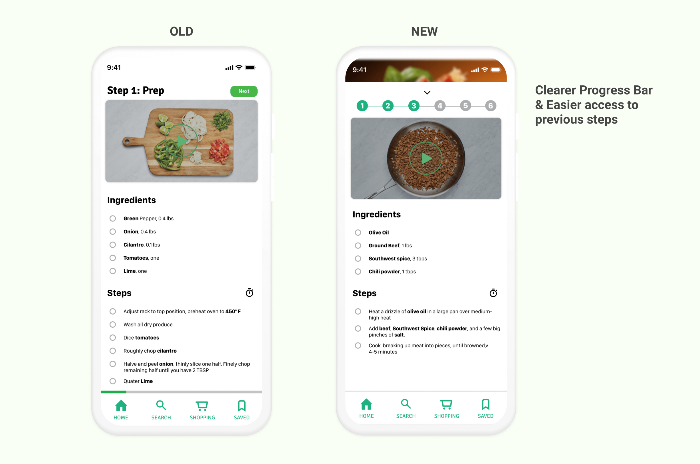

01/ Overview
Cooking can be difficult to learn as it involves a lot of process such as purchasing ingredients, preparation, cooking, and storing of ingredients. This case study aims to design a solution for novice cooks to learn and manage all aspect of cooking within one app.
This is a 4-week group project collaborated with Vera Wei and Katherine Fu
02/ Research - Cultural Probe
Our target participants for the research are college students as they represent the population of novice cooks. Since college students do not have a regular cooking schedule, our team determines that it will be appropriate to use cultural probe as the research method. Cultural probe allows us to understand the participants' context without being on the site.
To comply with safety precautions of COVID-19, our team decides to use virtual diaries that allow users to submit their thoughts and cooking experience after each cooking session coupled with photos of their cooking process. After collecting data of cultural Probe from our participants, we conducted a follow-up interview with our participants.
03/ Data Collection and Analysis
Affinity Diagrams to discover patterns
After collecting the data from our participants, we conducted an affinity diagramming session to discover common patterns that our participants experienced during their cooking sessions.

Work Models to reveal breakdowns
We built the sequence model to identify at which stage of the cooking process does the participants experience frustrations.
We also built artifact model to understand how the participants interact with physical artifact in the kitchen.

04/ Key Findings
1. Limited physical cooking space: This might influence how we design our application to take into account that users
might not have adequate space to put their phone on the kitchen dashboard.
2. Poor ingredient management: Participants did not plan ahead what they want to cook and get caught up when they realize
they do not have enough ingredients to cook the food intended. Sometimes, they overbought some ingredients and end up throwing the
leftovers to the trashcan, leading to food waste.
3. Motivations or goals of user: Cooking foods that are easy, can be cooked in bulk, and foods that represent their culture or country.
05/ Ideation
Storyboard
We start by storyboarding a hypothetical use case of the application.
Sketches
Idea One
One of the ideas we had was the app would ask the users to add the meals they want to cook for the week to the cooking list of the week. All required ingredients will then be automatically added to their cart and the users can treat it as a shopping list, or can directly purchase them from third-party vendors like Walmart.
The problems:
1. What if the user just want to cook one dish and not make a weekly plan?
2. WHat if the user already has the ingredients needed and don't want add every ingredients to the shopping list?
2. What if the third-party vendor is not located near the user, or is not the choice of the user?
Idea Two
Solution:
1. Change the home page to an "explore" page. The user can view a food and start cooking immediately, or
save to their list if they want to plan a meal plan.
2. The user has to manually add the ingredients they want for each recipe.
3. Instead of a shopping cart, change it to a shopping list. The user can check off items they already bought from a
brick and mortar store, or find the items in other apps of their choice.
Additional screens
1. To compensate the inability to make a meal plan, an alternative is to allow customized list.
The user can create customized lists based on their planning.
2. From our findings, users typically have certain motivations for cooking certain food, such as easy to prepare, dishes
from their home country, or healthy eating requirements. These classifications of foods will be provided as tags when the user is
searching for foods.
3. From our findings, we also identified that the user might have limited cooking space. That's why we also plan to include
audio/video tutorial on top of textual tutorial, so the user does not have to look at the screen to follow the steps to cook a meal.
Prototyping
Lo-fi Prototype
After getting the general idea of how the app would look like through sketching, we created some lo-fi prototypes to define more details of the screen.
Hi-fi Prototype
Finally, we start to define all low-level details of the prototype.
1. Home and Search
2. Shopping List
3. Recipe and Cooking Screen

Evaluation - Empirical-based testing
Hueristic Evaluation
We decided to use hueristic evaluation to evaluate the usability our design. This is because users would be mainly on the move or will be multitasking while using the app. Hence, we find it more appropriate to not use user-based testing.
Cognitive Walkthrough
Since user-based testing was not performed, we used cognitive walkthrough to evaluate our design as it allows us to be in the shoes of the user. We first define a few common tasks and each action associated with the task and create success or failure story based on our understanding of the persona of our users.
Findings and Solutions
1. Unsure if recipes/ingredients are added, and no easy way to undo actions
The problem: When the users add a recipe to their saved list, or ingredients to their shopping list, it is unclear whether those actions
were being performed.
The solution: Include a notification badge upon adding to saved list or shopping list.
The problem: If the user accidentally pressed the add button, the only way to undo the action is to go to the respective screen and remove
them manually.
The solution: Include an undo button on the notification badge that allows user to quickly undo the "add" action.
2. Unnoticable Progress Bar
The problem: The progress bar in the previous design was at the bottom and is almost unnoticable.
The solution: Move the progress bar to the top with a different design that communicates which step the user is in clearly. In addition,
the user can now "jump" to other steps as they wish.
3. Search History
The problem: The users have to explicitly remember their previous search term to find a recipe that find previously.
The solution: Include search history on the search page for the user to access.
4. Losing cooking context & lack of customized ingredient list
The problem: If the user exited the cooking screen before completing the meal, they have go through a series of steps in order to return to
that page.
The solution: If the user recently cooked something and did not complete through the final step, a 'continue cooking' card will be shown in the
home screen for users to return to their cooking process.
The problem: When the user add an additional ingredient not associated with a pre-existing recipe from the application, all of the ingredients
will be congregated into a list called 'customized list'.
The solution: When the user add a new ingredient, prompt them to add into the specific list they want, and they have the ability to add and name their
personal list as they like.
06/ Conclusion and Reflections
The team has learned a lot from this project, from designing probes for research participants, ideating through a complex problem, iterate through the design process, and conduct empirical-based usability testing such as hueristic evaluation. We were very satisfied with the results of our case study overall.
What would I have done differently
Design a physical probes for reseach participants
Due to COVID-19 restrictions, we have to conduct our cultural probe virtually. If I get the chances, I hope that I am able to design the cultural probe with
my team members in person and distribute them to our particiants physically. The current virtual model does not provide our participants enough incentives to
provide quality data for us to work with, which might have affected the results of our study.
Conduct user based usability testing
I also wished that our team were able to conduct usability testing with the user in person using the application when they were cooking. However, this pose a lot
of challenge because we have to conduct the testing in the user's environment which would open to a lot of unpredicted challenges since the environment is uncontrolled.